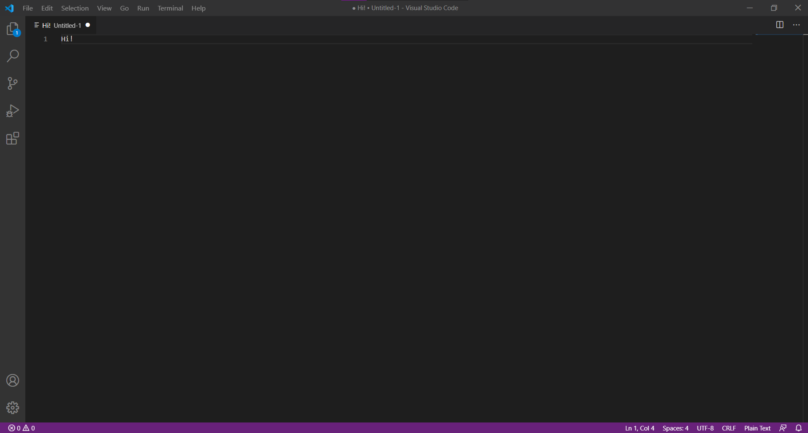

Get started
Welcome to Interphase's dedicated tutorial on getting you started with making websites. Don't worry if you've never programmed before or even know what programming means. If you don't, then you're in the right place.
What is coding?
If you want to create a good website, you will probably need to learn how to code. Coding, which is a subset of programming, refers to writing a series of instructions into a file, that when run, instruct the computer you're on to do something. You will soon realise that the ability to write coherent code is immensely powerful.
Now that you know what coding means, it is time to see some code. Lo and behold the 'code' below.
<p> Hello, I am code. </p>
Don't concern yourself with the weird signs around the sentence for now. Just know that this is an example of code. When this is written into a special file that ends in .html and displayed in major browsers such as Google Chrome, Mozilla Firefox or Microsoft Edge, it will output that sentence in all its glory.
Choosing a way to write your code
We believe that one of the first things you should think about is what text editor you use. This is what you will use to write your 'code'. This matters because a good text editor will improve your work flow, and ultimately make you a better programmer. We recommend a couple of the largest text editors out there below, with a brief description of what they're good for and not so good for.
| Editors | Pros | Cons |
|---|---|---|
| VS Code | Highly customisable & provides source control tools | A little complicated for beginners |
| Atom | Offers the best integration with GitHub & a modern design | Large install size & runs slower with many plugins |
| Sublime Text | Sleek and simple, has a distraction free writing mode & optimised for speed of execution | Lacks the same variety of plugins as VS Code and Atom |
You will find that any three of these text editors will offer you an enjoyable coding experience. Our personal recommendation would be to perhaps start with a lighter editor such as Sublime Text, and once you feel more comfortable, perhaps move on to using an editor like VS Code (our personal favourite, and what we used to write this website).
What even are programming and markup languages?
All of the above is good and well, but you've probably heard of the term "programming languages" before and wondered what that means.
These are in fact quite intuitively named - they're languages in the sense that they are used for us to communicate with computers. You may be surprised to hear that computers don't actually understand the code that you write. This needs to be translated first into another language that they do understand.
Programming languages are often confused with markup languages. They might appear similar at first glance but there is definitely a distinction. When we are talking about languages like HTML, which stands for 'Hyper Text Markup Language', we are referring to a language that is used to define a set of rules for encoding documents in a way that is understood by both humans and machines (i.e. computers).
Your time has come
You know what code means, you've seen what code looks like and you've even been introduced to the notion of languages. It is time for you to have a go at implementing this understanding for yourself.
Take another look at the text editors above and see what picks your fancy. If you're completely lost for choice, then as you're just getting started, we recommend trying out Sublime Text, which is the lightest editor out of the three (when we say 'lighter' we are referring to the size and complexity of the program - nothing else...).
To get started with using Sublime Text (or any text editor of your choice for that matter), the best practice is to get familiar with the respective editor's website and documentation. You will find that Google will be your best friend for this sort of stuff. We will help you out this one time and offer you the shortcut of just clicking here, which will take you to the official place where you can download the editor for yourself.
We would also like to emphasise the following point, so we will put it in bold: Try your best to get into the habit of reading documentation. This is perhaps one of the most invaluable pieces of advices we can offer to you as an aspiring programmer, and is something that we would hope you will keep with you far beyond reading this page.
You should be able to find the download link for your text editor now - in which case, make sure to install it following the respective set-up wizard, and then go ahead and open it.
Once you've created a new file in your editor of choice, you will see something like the above. If you do, then you're well on your way to producing your first piece of code.
We introduce you to one of the most popular programming languages used on the web, HTML (briefly alluded to before). This language is a markup language and is primarily used for writing text that is used to be displayed on a a web page. When you're writing text, you will most likely want to differentiate between what is a paragraph, a heading and so on. HTML allows you to do this using tags.
We enclose different pieces of content with an opening tag and a closing tag. For instance, in HTML, a paragraph is declared with the <p> tag. This tag has a respective closing tag, <p>. Anything encompassed within these tags is interpreted as a paragraph by the browser. Most elements on a web page are represented in this fashion, and you'll pick up on it quickly.
However, before we dive into writing a lovely web page with paragraphs, there are some good practices that we should learn. When creating a HTML page, we often start by declaring the following:
<!DOCTYPE html>
<html>
</html>
This is not as scary as it might seem. The first declaration, <DOCTYPE html>, simply tells your browser what to expect. In this case, it is telling the browser that it is about to see a HTML page. Note that this actually isn't a tag - it is simply informative to the web page. You might also have realised that it does not have a closing element too - this is not too weird since it isn't a tag as we've explained, but you'll also soon come across some tags that don't have a closing tag (yeah, a little confusing, but we thought we'd tell you now).
What follows, however, is indeed a tag. You might have recognised so due to its opening and closing tags. This is the 'root' element of the document, another important prerequisite which you should preface all your documents with, which is used to encapsulate all further HTML tags.
As such, yes, our <p> is right at home between these tags. In fact, you can copy the above code and add a paragraph in between that contains any text you like. You should end up with something like below.
<!DOCTYPE html>
<html>
<p>I am a paragraph.</p>
</html>
You have now officially created your first meaningful piece of code, and it is ready to be displayed into your web browser. We know you're eager, but you need to save this file before you do anything. You can call it whatever you want, but you need to make sure that your file ends in '.html'. For example, a suitable file name is 'index.html'. Once it has been saved, find wherever you saved it, and proceed to open it in your browser of choice. You should see your first piece of code come to life.
Am I done?
Not quite.

You've merely scratched the surface, but that's okay. You are starting your journey into the programming world and you need to take baby steps before you go any further. This page is designed to help you walk those steps as smoothly as possible. Once everything on this page has sunk in, you are ready to transcend into the world of detailed tutorial and documentation. We leave you with our personal favourite that beautifully continues where we leave you, W3Schools.